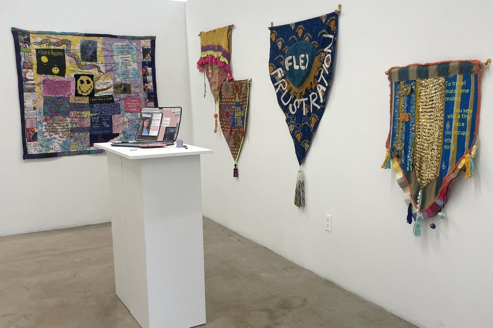

Flex & Flux
Collective 62 • Miami, FL
November 30, 2025–January 8, 2026
Flex & Flux brings together artists whose works explore language as visual, tactile, and conceptual material. In conversation with images, materials, and environments, words shift in meaning and form, shaped by context and individual experience. At times, language gives voice to memory, identity, or personal reflection; elsewhere, words themselves become the subject—questioning, provoking, or operating simply as form. Across these shifting modes, the exhibition considers how language functions both as a carrier of meaning and as an image in itself: embodied, mutable, and alive.
Presented alongside the exhibition, Multiples Matter: Artist Editions & Iterations extended these ideas through a pop-up shop featuring editioned and small-format works by participating artists. Drawing on the history of artist multiples from Dada onward, the project foregrounded accessibility, circulation, and repetition, considering how artworks can move beyond singular objects and into broader public exchange.
Curated in dialogue with Laura Marsh
- Marianna Angel
- Bel Falleiros and Renata Cruz
- Brooke Frank
- Katelyn Kopenhaver
- Marcela Marcuzzi
- Laura Marsh
- Daniel Marosi
- Genesis Moreno
- Kristina Reinis
- Nicholas J. Waguespack
- Jill Weisberg
- Chantae E. Wright
- Ricardo E. Zulueta
